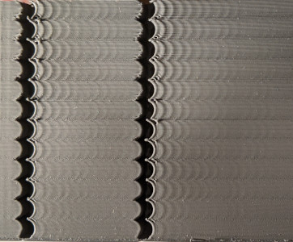
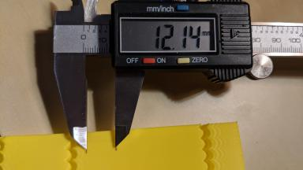
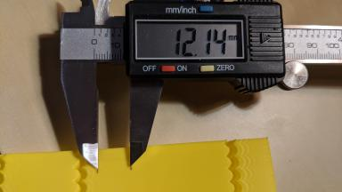
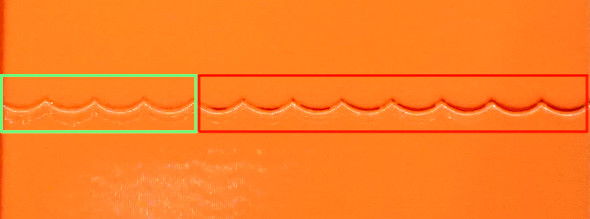

共振補償¶
Klipper支援Input Shaper技術 -一種可以用來減少列印件上環紋（也被稱為echo、ghosting或ripping）的技術。振紋是一種表面打印缺陷，通常在邊角的位置表面重複出現，成為一種微妙的水波狀紋路：
|| |
|
振紋是由印表機在快速改變列印方向時機械振動引起的。請注意，振紋通常源於機械方面的問題：印表機框架強度不足，皮帶不夠緊或太有彈性，機械部件的對準問題，移動質量大等。如果可能的話，應首先檢查和解決這些問題。
Input Shaping是一種開環控制技術，它通過產生一個控制訊號來抵消自身的振動。Input Shaper在啟用之前需要進行一些調整和測量。除了振紋之外，input shaper通常可以減少印表機的振動和搖晃，也可以提高 Trinamic 步進驅動器的StealthChop模式的可靠性。
調整¶
基本調試需要通過打印測試模型來測量打印機的環紋頻率。
將環紋測試模型切片，該模型可以在docs/prints/ringing_tower.stl中找到，在切片軟體中：
- 建議的層高為 0.2 或 0.25 毫米。
- 填充和頂層層數可以被設定為0。
- 使用 1-2 周長，或者使用 1-2 毫米底座的光滑花瓶模式更好。
- 外部周邊使用足夠高的速度，大約 80-100 毫米/秒。
- 確保最短的層耗時最多是3秒。
- 確保切片軟體中禁用任何"動態加速度控制"功能。
- 不要轉動模型。模型的背面標記了X和Y。注意這些標記與印表機軸線方向不相同--這不是一個錯誤。這些標記可以在以後的調整過程中作為參考，因為它們顯示了測量結果對應的軸。
振紋頻率¶
首先，測量振紋頻率。
- 如果
square_corner_velocity參數已更改，請將其恢復為 5.0。使用input shaper時不建議增加它，因為它會導致零件更平滑 - 最好使用更高的加速度值。 - 通過發出以下命令增加
max_accel_to_decel：SET_VELOCITY_LIMIT ACCEL_TO_DECEL=7000 - 禁用Pressure Advance：
SET_PRESSURE_ADVANCE ADVANCE=0 - 如果你已經將
[input_shaper]分段新增到print.cfg中，執行SET_INPUT_SHAPER SHAPER_FREQ_X=0 SHAPER_FREQ_Y=0命令。如果你得到"未知命令"錯誤，此時你可以安全地忽略它，繼續進行測量。 - 執行命令：
TUNING_TOWER COMMAND=SET_VELOCITY_LIMIT PARAMETER=ACCEL START=1500 STEP_DELTA=500 STEP_HEIGHT=5基本上，我們嘗試通過設置不同的大加速度值來使環紋更加明顯。此命令將從 1500 mm/sec^2 開始每 5 mm 增加加速度：1500 mm/sec^2、2000 mm/sec^2、2500 mm/sec^2 等等，直到 7000 mm/sec^2最後一個區域。 - 列印用建議的參數切片的測試模型。
-
如果振紋清晰可見，並且發現加速度對你的印表機來說太高了（如印表機抖動太厲害或開始丟步），你可以提前停止列印。
- 使用模型背面的 X 和 Y 標記作為參考。帶有 X 標記的一側的測量值應用於 X 軸配置，而 Y 標記 - 用於 Y 軸配置。在帶有 X 標記的零件上，在槽口附近測量幾次振動之間的距離 D（以毫米為單位），最好跳過第一次或兩次振動。為了更容易地測量振蕩之間的距離，請先標記振盪，然後用尺子或卡尺測量標記之間的距離：|
 ||
|| - 計算測量距離 D 對應的振盪次數 N。如果您不確定如何計算振盪次數，請參考上圖，其中顯示 N = 6 次振盪。
- 計算X軸環紋頻率為V · N / D (Hz)，其中 V 是外周的速度 (mm/sec)。對於上面的示例，我們標記了 6 個振盪，並且測試以 100 毫米/秒的速度打印，因此頻率為 100 * 6 / 12.14 ≈ 49.4 Hz。
- 對 Y 標記也執行 (8) - (10)。
- 使用模型背面的 X 和 Y 標記作為參考。帶有 X 標記的一側的測量值應用於 X 軸配置，而 Y 標記 - 用於 Y 軸配置。在帶有 X 標記的零件上，在槽口附近測量幾次振動之間的距離 D（以毫米為單位），最好跳過第一次或兩次振動。為了更容易地測量振蕩之間的距離，請先標記振盪，然後用尺子或卡尺測量標記之間的距離：|
請注意，測試打印上的環紋應遵循彎曲凹槽的圖案，如上圖所示。如果不是，那麼這個缺陷並不是真正的環紋，而是有不同的起源——機械問題或擠出機問題。在啟用和input shapers之前，應該先修復它。
如果測量結果不可靠，例如，振蕩之間的距離不穩定，則可能意味著打印機在同一軸上有多個共振頻率。可以嘗試遵循 不可靠的環紋頻率測量 部分中描述的調整過程，但仍然可以從input shaper技術中獲得一些東西。
環紋頻率可能取決於模型在構建板內的位置和 Z 高度，尤其是在 三角洲打印機上；您可以檢查是否在測試模型兩側的不同位置和不同高度看到頻率差異。如果是這種情況，您可以計算 X 軸和 Y 軸上的平均環紋頻率。
如果測得的環紋頻率非常低（低於大約 20-25 Hz），那麼在進行進一步的input shaper之前，最好投資於加強打印機或減少移動質量（取決於您的情況適用的情況）調整，然後重新測量頻率。對於許多流行的打印機型號，通常已經有一些可用的解決方案。
請注意，如果對打印機進行了影響移動質量或改變系統剛度的更改，則環紋頻率可能會發生變化，例如：
- 在改變其質量的工具頭上安裝、移除或更換了一些工具，例如安裝了用於直接擠出機或新熱端的新（更重或更輕）步進電機，添加了帶管道的重型風扇等。
- 皮帶收緊了。
- 安裝了一些增加框架剛度的插件。
- 在拋床打印機上安裝不同的床，或添加玻璃等。
如果進行了此類更改，最好至少測量環紋頻率以查看它們是否已更改。
Input shaper配置¶
在測量 X 和 Y 軸的環紋頻率後，您可以將以下部分添加到您的 printer.cfg 中：
[input_shaper]
shaper_freq_x: ... # frequency for the X mark of the test model
shaper_freq_y: ... # frequency for the Y mark of the test model
對於上面的示例，我們得到 shaper_freq_x/y = 49.4。
選擇 input shaper¶
Klipper 支持多種 input shaper。它們對確定共振頻率的誤差的敏感性以及它們在打印部件中引起的平滑程度不同。此外，像 2HUMP_EI 和 3HUMP_EI 這樣的一些整形器通常不應該與 shaper_freq = 共振頻率一起使用——它們是從不同的考慮來配置的，以一次減少多個共振。
對於大多數打印機，可以推薦 MZV 或 EI 整形器。本節描述了在它們之間進行選擇的測試過程，並確定了一些其他相關參數。
打印環形測試模型如下：
- 重啟固件：
RESTART - 準備測試：
SET_VELOCITY_LIMIT ACCEL_TO_DECEL=7000 - 禁用Pressure Advance：
SET_PRESSURE_ADVANCE ADVANCE=0 - 執行：
SET_INPUT_SHAPER SHAPER_TYPE=MZV - 執行命令：
TUNING_TOWER COMMAND=SET_VELOCITY_LIMIT PARAMETER=ACCEL START=1500 STEP_DELTA=500 STEP_HEIGHT=5 - 列印用建議的參數切片的測試模型。
如果此時您沒有看到環紋，則可以推薦使用 MZV 整形器。
如果您確實看到一些環紋，請使用 環紋頻率 部分中描述的步驟 (8)-(10) 重新測量頻率。如果頻率與您之前獲得的值顯著不同，則需要更複雜的input shaper配置。您可以參考 Choosing input shaper 部分的技術細節。否則，繼續下一步。
現在嘗試 EI input shaper。要嘗試它，請從上面重複步驟 (1)-(6)，但在步驟 4 中執行以下命令：SET_INPUT_SHAPER SHAPER_TYPE=EI。
使用 MZV 和 EI input shaper比較兩個打印。如果 EI 顯示出明顯優於 MZV 的結果，請使用 EI 整形器，否則更喜歡 MZV。請注意，EI shaper 將使打印部件更加平滑（有關詳細信息，請參閱下一節）。將 shaper_type: mzv（或 ei）參數添加到 [input_shaper] 部分，例如：
[input_shaper]
shaper_freq_x: ...
shaper_freq_y: ...
shaper_type: mzv
關於整形器選擇的一些注意事項：
- EI shaper 可能更適合於拋床打印機（如果共振頻率和由此產生的平滑允許）：隨著更多的細絲沉積在移動床上，床的質量會增加，共振頻率會降低。由於 EI 整形器對共振頻率變化更加穩健，因此在打印大型零件時可能會更好地工作。
- 由於三角洲機型的性質，共振頻率在構建體積的不同部分可能會有很大差異。因此，EI shaper 可能比 MZV 或 ZV 更適合 delta 打印機，應考慮使用。如果共振頻率足夠大（超過 50-60 Hz），那麼甚至可以嘗試測試 2HUMP_EI 整形器（通過使用
SET_INPUT_SHAPER SHAPER_TYPE=2HUMP_EI運行上面建議的測試），但請檢查 下面的部分 在啟用它之前。
選擇 max_accel¶
您應該對從上一步中選擇的整形器進行打印測試（如果沒有，請打印使用 建議參數 切片的測試模型，禁用壓力提前 SET_PRESSURE_ADVANCE ADVANCE=0 並使用調諧塔啟用為 TUNING_TOWER COMMAND=SET_VELOCITY_LIMIT PARAMETER=ACCEL START=1500 STEP_DELTA=500 STEP_HEIGHT=5）。請注意，在非常高的加速度下，取決於共振頻率和您選擇的 input shaper（例如，EI 整形器比 MZV 產生更多的平滑）， input shaper可能會導致零件過度平滑和圓化。因此，應該選擇 max_accel 以防止這種情況發生。另一個可能影響平滑的參數是“square_corner_velocity”，因此不建議將其增加到默認的 5 毫米/秒以上，以防止增加平滑。
為了選擇合適的 max_accel 值，請檢查所選 input shaper 的模型。首先，記下加速度環紋仍然很小的情況——您對此感到滿意。
接下來，檢查平滑。為了解決這個問題，測試模型在牆上有一個小間隙（0.15 毫米）：
隨著加速度的增加，平滑度也會增加，打印中的實際間隙也會擴大：

在這張圖片中，加速度從左到右增加，間隙從 3500 mm/sec^2（左起第 5 個波段）開始增加。因此，在這種情況下，max_accel = 3000 (mm/sec^2) 的良好值可以避免過度平滑。
請注意在您的測試打印中間隙仍然非常小時的加速度。如果您看到凸起，但壁上根本沒有間隙，即使在高加速度下，也可能是由於禁用了壓力推進，尤其是在鮑登擠出機上。如果是這種情況，您可能需要在啟用 PA 的情況下重複打印。這也可能是由於燈絲流量校準錯誤（過高）造成的，因此最好也檢查一下。
從兩個加速度值（來自環紋和平滑）中選擇最小值，並將其作為max_accel放入printer.cfg。
需要注意的是，即使在較低的加速度下，EI 整形器也可能會導致過度平滑——尤其是在低環紋頻率下。在這種情況下，MZV 可能是更好的選擇，因為它可能允許更高的加速度值。
在非常低的環紋頻率（~25 Hz 及以下）下，即使是 MZV 整形器也可能會產生過多的平滑。如果是這種情況，您也可以嘗試使用 ZV 整形器重複 Choosing input shaper 部分中的步驟，改用 SET_INPUT_SHAPER SHAPER_TYPE=ZV 命令。 ZV 整形器應該比 MZV 顯示更少的平滑，但對測量環紋頻率的誤差更敏感。
另一個考慮因素是，如果共振頻率太低（低於 20-25 Hz），增加打印機剛度或減少移動質量可能是個好主意。否則，加速度和打印速度可能會由於現在過於平滑而不是環紋而受到限制。
微調共振頻率¶
請注意，使用環紋測試模型的諧振頻率測量精度足以滿足大多數目的，因此不建議進一步調整。如果您仍想嘗試仔細檢查您的結果（例如，如果您在使用您選擇的input shaper打印一個測試模型後仍然看到一些環紋，您選擇的input shaper與您之前測量的頻率相同），您可以按照本文中的步驟操作部分。請注意，如果您在啟用 [input_shaper] 後看到不同頻率的環紋，則本節將無濟於事。
假設您已使用建議的參數對環紋模型進行切片，請針對 X 軸和 Y 軸中的每一個完成以下步驟：
- 準備測試：
SET_VELOCITY_LIMIT ACCEL_TO_DECEL=7000 - 確保Pressure Advance被禁用：
SET_PRESSURE_ADVANCE ADVANCE=0 - 執行：
SET_INPUT_SHAPER SHAPER_TYPE=ZV - 從具有您選擇的 input shaper的現有環紋測試模型中選擇顯示環紋足夠好的加速度，並將其設置為：
SET_VELOCITY_LIMIT ACCEL=... - 計算
TUNING_TOWER命令調整shaper_freq_x參數的必要參數如下： start = shaper_freq_x * 83 / 132 和 factor = shaper_freq_x / 66，其中shaper_freq_x這裡是printer.cfg中的當前值。 - 使用在步驟 (5) 計算的
start和factor值執行命令：TUNING_TOWER COMMAND=SET_INPUT_SHAPER PARAMETER=SHAPER_FREQ_X START=start FACTOR=factor BAND=5。 - 打印測試模型。
- 重置原始頻率值：
SET_INPUT_SHAPER SHAPER_FREQ_X=...。 - 找到環紋最少的區間，從 1 開始從底部開始計數。
- 通過舊的 shaper_freq_x * (39 + 5 * #band-number) / 66 計算新的 shaper_freq_x 值。
以相同的方式對 Y 軸重複這些步驟，將 X 軸的引用替換為 Y 軸（例如，在公式和TUNING_TOWER命令中將shaper_freq_x替換為shaper_freq_y）。
例如，假設您已經測量了一個軸的環紋頻率等於 45 Hz。這給出了“TUNING_TOWER”命令的 start = 45 * 83 / 132 = 28.30 和 factor = 45 / 66 = 0.6818 值。現在讓我們假設在打印測試模型後，從底部開始的第四個波段的環紋最少。這給出了更新的 shaper_freq_?值等於 45 * (39 + 5 * 4) / 66 ≈ 40.23。
在計算出新的 shaper_freq_x 和 shaper_freq_y 參數後，您可以使用新的 shaper_freq_x 和 shaper_freq_y 值更新 printer.cfg 中的 [input_shaper] 部分。
Pressure Advance¶
如果您使用 Pressure Advance，則可能需要重新調整。按照 instructions 找到新值，如果它與前一個不同。確保在調整 Pressure Advance 之前重新啟動 Klipper。
環紋頻率測量不可靠¶
如果您無法測量環紋頻率，例如如果振蕩之間的距離不穩定，您仍然可以利用Input Shaper技術，但結果可能不如正確測量頻率那樣好，並且需要更多的調整和打印測試模型。請注意，另一種可能性是購買並安裝加速度計並用它測量共振（請參閱描述所需硬件和設置過程的 docs） - 但此選項需要一些壓接和焊接。
要進行調整，請將空的 [input_shaper] 部分添加到您的 printer.cfg。然後，假設您已使用建議的參數對環紋模型進行切片，按如下方式打印測試模型 3 次。第一次，在打印之前，運行
RESTARTSET_VELOCITY_LIMIT ACCEL_TO_DECEL=7000SET_PRESSURE_ADVANCE ADVANCE=0SET_INPUT_SHAPER SHAPER_TYPE=2HUMP_EI SHAPER_FREQ_X=60 SHAPER_FREQ_Y=60TUNING_TOWER COMMAND=SET_VELOCITY_LIMIT PARAMETER=ACCEL START=1500 STEP_DELTA=500 STEP_HEIGHT=5
並打印模型。然後再次打印模型，但在打印之前運行
SET_INPUT_SHAPER SHAPER_TYPE=2HUMP_EI SHAPER_FREQ_X=50 SHAPER_FREQ_Y=50TUNING_TOWER COMMAND=SET_VELOCITY_LIMIT PARAMETER=ACCEL START=1500 STEP_DELTA=500 STEP_HEIGHT=5
然後第三次打印模型，但現在運行
SET_INPUT_SHAPER SHAPER_TYPE=2HUMP_EI SHAPER_FREQ_X=40 SHAPER_FREQ_Y=40TUNING_TOWER COMMAND=SET_VELOCITY_LIMIT PARAMETER=ACCEL START=1500 STEP_DELTA=500 STEP_HEIGHT=5
本質上，我們使用 2HUMP_EI shaper 和 shaper_freq = 60 Hz、50 Hz 和 40 Hz 打印帶有 TUNING_TOWER 的環紋測試模型。
如果沒有一個模型顯示環紋的改進，那麼很遺憾，input shaper技術似乎對您的情況沒有幫助。
否則，可能是所有型號都沒有響鈴，或者有些型號有響鈴，有些型號沒有響鈴。選擇頻率最高的測試模型，在環紋方面仍顯示出良好的改進。例如，如果 40 Hz 和 50 Hz 型號幾乎沒有環紋，而 60 Hz 型號已經顯示更多環紋，則堅持使用 50 Hz。
現在檢查 EI 整形器在您的情況下是否足夠好。根據您選擇的 2HUMP_EI 整形器的頻率選擇 EI 整形器頻率：
- 對於 2HUMP_EI 60 Hz 整形器，使用 shaper_freq = 50 Hz 的 EI 整形器。
- 對於 2HUMP_EI 50 Hz 整形器，使用 shaper_freq = 40 Hz 的 EI 整形器。
- 對於 2HUMP_EI 40 Hz 整形器，使用 shaper_freq = 33 Hz 的 EI 整形器。
現在再打印一次測試模型，運行
SET_INPUT_SHAPER SHAPER_TYPE=EI SHAPER_FREQ_X=... SHAPER_FREQ_Y=...TUNING_TOWER COMMAND=SET_VELOCITY_LIMIT PARAMETER=ACCEL START=1500 STEP_DELTA=500 STEP_HEIGHT=5
提供之前確定的 shaper_freq_x=... 和 shaper_freq_y=...。
如果 EI shaper 顯示出與 2HUMP_EI shaper 非常相似的良好結果，則堅持使用 EI shaper 和之前確定的頻率，否則使用具有相應頻率的 2HUMP_EI shaper。將結果添加到 printer.cfg 中，例如
[input_shaper]
shaper_freq_x: 50
shaper_freq_y: 50
shaper_type: 2hump_ei
使用 Selecting max_accel 分區繼續調整。
故障排除和常見問題解答¶
我無法可靠地測量共振頻率¶
首先，確保打印機不是響鈴而不是其他問題。如果測量結果不可靠，例如，振蕩之間的距離不穩定，則可能意味著打印機在同一軸上有多個共振頻率。可以嘗試遵循 Unreliable measurements of ringing frequencies 部分中描述的調整過程，仍然可以從input shaper技術中獲得一些東西。另一種可能性是安裝加速度計，[測量]
啟用 [input_shaper] 後，打印部分過於平滑，細節丟失¶
檢查 選擇 max_accel 部分中的注意事項。如果諧振頻率較低，則不應設置過高的 max_accel 或增加 square_corner_velocity 參數。最好選擇 MZV 甚至 ZV input shaper 而不是 EI（或 2HUMP_EI 和 3HUMP_EI 整形器）。
成功打印一段時間後沒有環紋，它似乎又回來了¶
有可能在一段時間後共振頻率發生了變化。例如。可能是皮帶張力發生了變化（皮帶變得更鬆了）等。最好按照 Ringing frequency 部分中的說明檢查並重新測量環紋頻率，並在必要時更新配置文件.
input shaper是否支持雙步進匣設置？¶
沒有對帶有input shaper的雙筆架的專門支持，但這並不意味著此設置不起作用。應該對每個托架運行兩次調諧，並獨立計算每個托架的 X 軸和 Y 軸的環紋頻率。然後將托架 0 的值放入 [input_shaper] 部分，並在更改托架時即時更改值，例如作為一些宏的一部分：
SET_DUAL_CARRIAGE CARRIAGE=1
SET_INPUT_SHAPER SHAPER_FREQ_X=... SHAPER_FREQ_Y=...
同樣當切換回步進匣 0 時。
input_shaper 會影響打印時間嗎？¶
不，input_shaper 功能本身對打印時間幾乎沒有影響。但是，max_accel 的值肯定會起作用（在 this section 中描述了此參數的調整）。
技術細節¶
input shapers¶
Klipper 中使用的 input shaper相當標準，可以在描述相應整形器的文章中找到更深入的概述。本節簡要概述了受支持的input shaper的一些技術方面。下表顯示了每個整形器的一些（通常是近似的）參數。
| Input shaper |
Shaper 時段 |
減振 20 倍 （5% 振動容限） |
減振 10 倍 （10% 振動容限） |
|---|---|---|---|
| ZV | 0.5 / shaper_freq | N/A | ± 5% shaper_freq |
| MZV | 0.75 / shaper_freq | ± 4% shaper_freq | -10%...+15% shaper_freq |
| ZVD | 1 / shaper_freq | ± 15% shaper_freq | ± 22% shaper_freq |
| EI | 1 / shaper_freq | ± 20% shaper_freq | ± 25% shaper_freq |
| 2HUMP_EI | 1.5 / shaper_freq | ± 35% shaper_freq | ± 40 shaper_freq |
| 3HUMP_EI | 2 / shaper_freq | -45...+50% shaper_freq | -50%...+55% shaper_freq |
關於減振的說明：上表中的值是近似值。如果打印機的阻尼比對於每個軸都是已知的，那麼整形器可以更精確地配置，然後它將在更寬的頻率範圍內減少共振。但是阻尼比通常是未知的，如果沒有特殊的設備很難估計，所以 Klipper 默認使用 0.1 值，這是一個很好的綜合值。表中的頻率範圍涵蓋了該值附近的許多不同可能的阻尼比（大約從 0.05 到 0.2）。
另請注意，EI、2HUMP_EI 和 3HUMP_EI 已調整為將振動降低到 5%，因此 10% 振動容限的值僅供參考。
如何使用此表：
- Shaper 持續時間會影響零件的平滑度 - 它越大，零件越平滑。這種依賴性不是線性的，但可以讓您了解對於相同頻率哪些整形器更“平滑”。平滑排序是這樣的：ZV < MZV < ZVD ≈ EI < 2HUMP_EI < 3HUMP_EI。此外，為整形器 2HUMP_EI 和 3HUMP_EI 設置 shaper_freq = 共振頻率很少實用（它們應該用於減少多個頻率的振動）。
- 人們可以估計整形器減少振動的頻率範圍。例如，shaper_freq = 35 Hz 的 MZV 將頻率 [33.6, 36.4] Hz 的振動降低到 5%。 shaper_freq = 50 Hz 的 3HUMP_EI 在 [27.5, 75] Hz 範圍內將振動降低到 5%。
- 如果他們需要減少多個頻率的振動，可以使用此表來檢查他們應該使用哪個整形器。例如，如果在同一軸上有 35 Hz 和 60 Hz 的共振： a) EI 整形器需要 shaper_freq = 35 / (1 - 0.2) = 43.75 Hz，它將減少共振直到 43.75 * (1 + 0.2 ) = 52.5 Hz，因此還不夠； b) 2HUMP_EI shaper 需要 shaper_freq = 35 / (1 - 0.35) = 53.85 Hz 並且會減少振動直到 53.85 * (1 + 0.35) = 72.7 Hz - 所以這是一個可接受的配置。對於給定的整形器，始終嘗試使用盡可能高的 shaper_freq（可能有一些安全餘量，因此在本例中 shaper_freq ≈ 50-52 Hz 效果最佳），並嘗試使用整形器持續時間盡可能短的整形器。
- 如果需要減少幾個非常不同的頻率（例如 30 Hz 和 100 Hz）的振動，他們可能會發現上表沒有提供足夠的信息。在這種情況下，使用更靈活的 scripts/graph_shaper.py 腳本可能會更幸運。